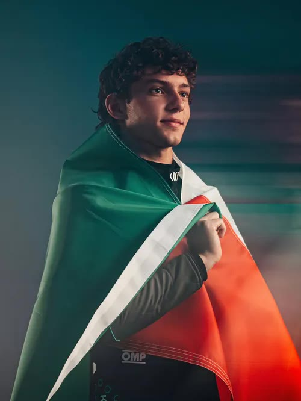
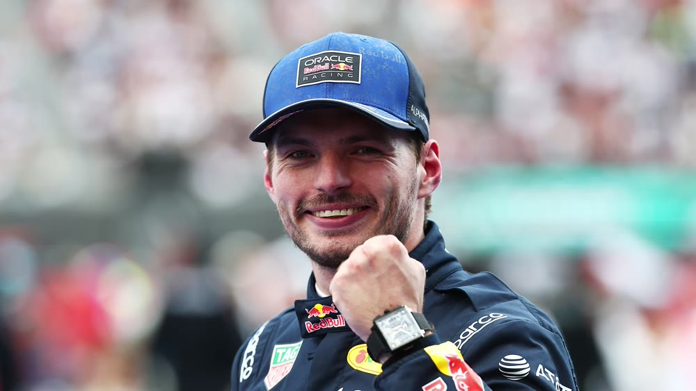
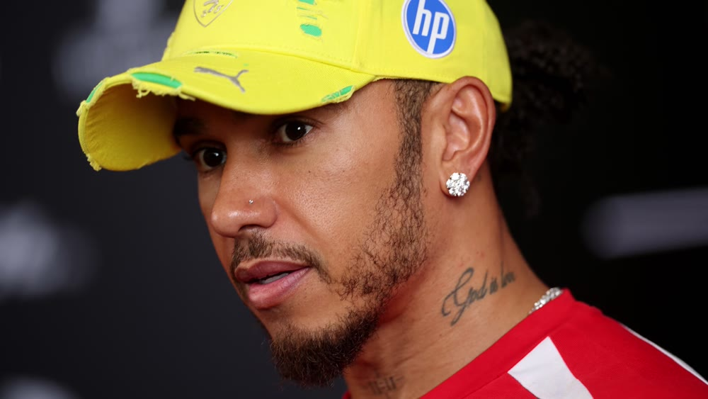

Kimi Antonelli
Mercedes-AMG Petronas Formula 1 Team
380 PTS
🧑🚀
F1의 짜릿한 속도와 치열한 전략 싸움에 빠져 매 경기 챙겨보는 열정적인 팬
트랙 위에서 한계를 넘는
F1 드라이버를 만나보세요.
서킷마다 다른 매력과
레이스의 순간을 만나보세요.
속도를 위해 만들어진
머신의 기술을 알아보세요.
드라이버와 팀의
순위 경쟁을 확인해 보세요.

Mercedes-AMG Petronas Formula 1 Team
380 PTS


